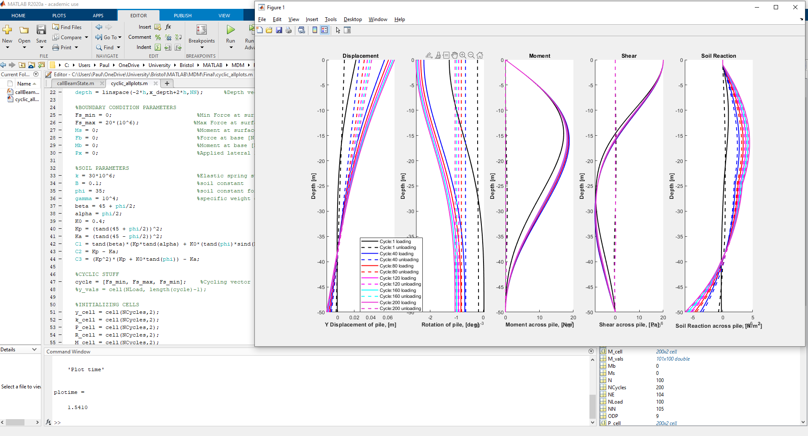

Airbus Defence and Space: Internship
Integrable Virtual Assistant for Airbus Defence and Space.

During my Internship I was tasked with the development of a module for a voice activated Virtual Assistant to help operators navigate an Airbus Web-Service.
MSc Dissertation
Adapting Morphology to cope with changes in soft robotics.
Project aim was to assess the robustness of the creatures created by a genetic algorithm. Creatures are evolved within a flat environment to optimise their morphology for locomotion. After an optimal morphology is found, creatures are then inflicted with significant morphological damage.
Offshore Wind Farms
Optimised Design of Monopile Foundations

MSc Group project studying the non-linear behavior of Monopile Foundations. Tasked with coding the non-elastic behaviors of soils to predict failures of monopile foundations when under cyclic loads. Failure occurs when the soil can compress no further and breaks in a wedge shape, known as 'wedge-failure'.
BEng Dissertation
Neumatic prosthesis

IMechE award winner. Product design, manufacturing and testing of a pneumatic peg-leg prosthesis developed to deal with harsher environments. Device had to be simple, adaptable and cheap to manufacture for use in developing countries.
BEng EWB Project:
Nepal Water for health (W.A.S.H.)
System designed to provide clean drinking water, hygiene and sanitation for a community in the town of Sandikhola, Nepal.